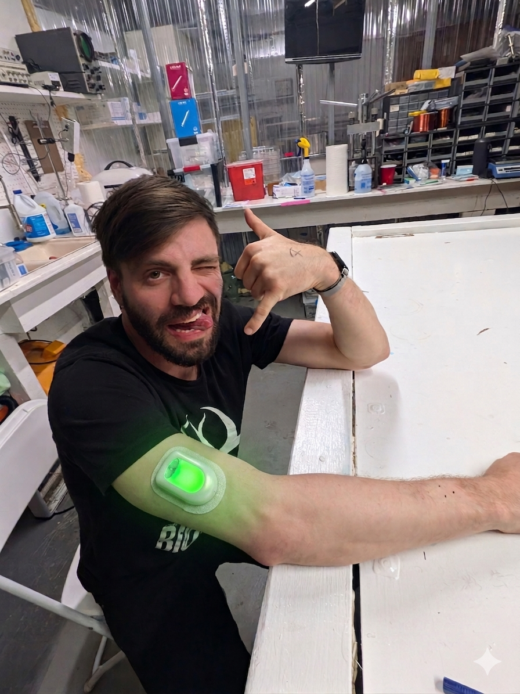

A pre-registered N=1 self-experiment of continuous subcutaneous infusion of BPC-157 and TB-500 — the two peptides ResearchHub named by name as priority research targets. All methods, data, and code open-sourced.

SUBJECT 001 · T+00:00 · ACTIVEThree structural failures keep the field in the dark — and the same infrastructure stack solves all three.
Self-administered subQ injections require multiple daily doses. Real-world adherence sits at 60–75%. People forget. Schedules slip. Effects become inconsistent across users.
Bolus injections create plasma peaks and troughs. Tissue repair biology runs continuously — angiogenesis, fibroblast activation, cell migration. Delivery and physiology don't match.
No shared protocols. No biomarker standards. No data infrastructure. Each biohacker running peptides generates data that just dies in private. Zero evidence base accumulates.
Two tissue-repair peptides at fixed daily ratios, co-formulated in a single 2 mL pod, infused continuously at 0.012 mL/hr with weekly pod changes for 90 days.
Pro-angiogenic. Activates NOS pathway, drives VEGF-A induction and fibroblast activation. Underwrites tissue formation and vascular repair.
Cell migration into the angiogenic field. Actin sequestration. Anti-inflammatory. Native protein is constitutive in plasma — continuous dosing matches physiology.
Steady-state plasma concentration outperforms pulsatile dosing across every endpoint that matters — at equivalent or lower total daily dose.
Four data streams, five timepoints, full pre-registration, open dataset on completion regardless of outcome.
BDNF, NfL, hsCRP, IL-6, TGF-β1, VEGF, P1NP, CTX, hyaluronic acid, CK. Standard safety panels (CMP, CBC, LFTs). CANTAB cognitive testing at three timepoints.
Standardized eccentric quad protocol (5×10 max-effort reps). CK time-course at +24/48/72 hours. Pre-trial vs Week 12 comparison — a hard-to-fake functional readout of repair capacity.
HRV (RMSSD), sleep architecture (deep/REM/total/efficiency), resting heart rate, daily activity. Garmin or Whoop + Oura ring for redundancy. Raw data exported and versioned.
1–10 ratings for energy, recovery, sleep quality, focus, mood. Free-text notes. Photo log of injection sites. Captured digitally with timestamps.
From baseline draw to published writeup — every milestone produces a public deliverable.
Pump procurement. Pharmacy onboarding. Baseline biomarker panel. Wearable calibration.
Continuous infusion. Daily logging. Weekly check-ins. Biomarker draws at Week 4, 8, 12.
Statistical analysis per pre-registered plan. Manuscript draft. Protocol v2 decision tree.
Open-source full protocol, data, and code. Publish the writeup regardless of outcome.
Itemized. Research-grade peptides with independent HPLC verification. A compounded sterile formulation is a crowdfunding stretch goal.
$10K seed plus $5K in crowdfunding stretch unlocks expanded biomarker depth and deeper analytical characterization.
Quarterly data updates. Name in the published writeup. Access to the anonymized dataset on release.
Everything above. Co-author credit on the manuscript. One-hour protocol consultation.
Everything above. Quarterly strategy calls. Optional anonymized featuring at Biopunk events.